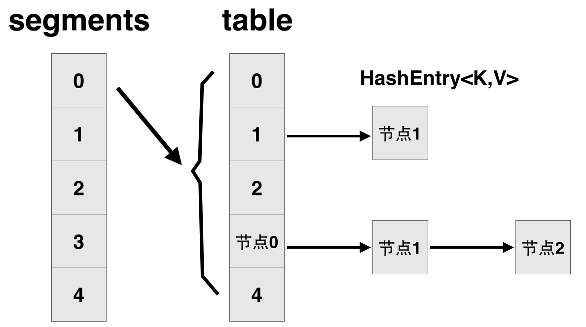

ConcurrentHashmap
JDK1.7
ConcurrentHashMap的锁分段技术：假如容器里有多把锁，每一把锁用于锁容器其中一部分数据，那么当多线程访问容器里不同数据段的数据时，线程间就不会存在锁竞争，从而可以有效的提高并发访问效率，这就是ConcurrentHashMap所使用的锁分段技术。首先将数据分成一段一段的存储，然后给每一段数据配一把锁，当一个线程占用锁访问其中一个段数据的时候，其他段的数据也能被其他线程访问。
ConcurrentHashMap不允许Key或者Value的值为NULL。ConcurrentMaps中不允许空值的主要原因是，在非并发映射中几乎不能容忍的模糊性是无法容纳的。主要的一点是如果map.get（key）返回null，则无法检测 key 是否显式映射为 null 或者 key 未映射。 在非并发映射中，您可以通过map.contains（key）进行检查，但在并发映射中，映射可能在调用之间发生了变化。

Segment类
Put
将一个HashEntry放入到该Segment中，使用自旋机制，减少了加锁的可能性。
final V put(K key, int hash, V value, boolean onlyIfAbsent) {
HashEntry<K,V> node = tryLock() ? null :
scanAndLockForPut(key, hash, value); //如果加锁失败，则调用该方法
V oldValue;
try {
HashEntry<K,V>[] tab = table;
int index = (tab.length - 1) & hash; //同hashMap相同的哈希定位方式
HashEntry<K,V> first = entryAt(tab, index);
for (HashEntry<K,V> e = first;;) {
if (e != null) {
//若不为null，则持续查找，知道找到key和hash值相同的节点，将其value更新
K k;
if ((k = e.key) == key ||
(e.hash == hash && key.equals(k))) {
oldValue = e.value;
if (!onlyIfAbsent) {
e.value = value;
++modCount;
}
break;
}
e = e.next;
}
else { //若头结点为null
if (node != null) //在遍历key对应节点链时没有找到相应的节点
node.setNext(first);
//当前修改并不需要让其他线程知道，在锁退出时修改自然会
//更新到内存中,可提升性能
else
node = new HashEntry<K,V>(hash, key, value, first);
int c = count + 1;
if (c > threshold && tab.length < MAXIMUM_CAPACITY)
rehash(node); //如果超过阈值，则进行rehash操作
else
setEntryAt(tab, index, node);
++modCount;
count = c;
oldValue = null;
break;
}
}
} finally {
unlock();
}
return oldValue;
}
scanAndLockForPut
该操作持续查找key对应的节点链中是否已存在该节点，如果没有找到已存在的节点，则预创建一个新节点，并且尝试n次，直到尝试次数超出限制，才真正进入等待状态，即所谓的 自旋等待。
private HashEntry<K,V> scanAndLockForPut(K key, int hash, V value) {
//根据hash值找到segment中的HashEntry节点
HashEntry<K,V> first = entryForHash(this, hash); //首先获取头结点
HashEntry<K,V> e = first;
HashEntry<K,V> node = null;
int retries = -1; // negative while locating node
while (!tryLock()) { //持续遍历该哈希链
HashEntry<K,V> f; // to recheck first below
if (retries < 0) {
if (e == null) {
if (node == null) //若不存在要插入的节点，则创建一个新的节点
node = new HashEntry<K,V>(hash, key, value, null);
retries = 0;
}
else if (key.equals(e.key))
retries = 0;
else
e = e.next;
}
else if (++retries > MAX_SCAN_RETRIES) {
//尝试次数超出限制，则进行自旋等待
lock();
break;
}
/*当在自旋过程中发现节点链的链头发生了变化，则更新节点链的链头，
并重置retries值为－1，重新为尝试获取锁而自旋遍历*/
else if ((retries & 1) == 0 &&
(f = entryForHash(this, hash)) != first) {
e = first = f; // re-traverse if entry changed
retries = -1;
}
}
return node;
}
remove
用于移除某个节点，返回移除的节点值。
final V remove(Object key, int hash, Object value) {
if (!tryLock())
scanAndLock(key, hash);
V oldValue = null;
try {
HashEntry<K,V>[] tab = table;
int index = (tab.length - 1) & hash;
//根据这种哈希定位方式来定位对应的HashEntry
HashEntry<K,V> e = entryAt(tab, index);
HashEntry<K,V> pred = null;
while (e != null) {
K k;
HashEntry<K,V> next = e.next;
if ((k = e.key) == key ||
(e.hash == hash && key.equals(k))) {
V v = e.value;
if (value == null || value == v || value.equals(v)) {
if (pred == null)
setEntryAt(tab, index, next);
else
pred.setNext(next);
++modCount;
--count;
oldValue = v;
}
break;
}
pred = e;
e = next;
}
} finally {
unlock();
}
return oldValue;
}
Clear
要首先对整个segment加锁，然后将每一个HashEntry都设置为null。
final void clear() {
lock();
try {
HashEntry<K,V>[] tab = table;
for (int i = 0; i < tab.length ; i++)
setEntryAt(tab, i, null);
++modCount;
count = 0;
} finally {
unlock();
}
}
Put
public V put(K key, V value) {
Segment<K,V> s;
if (value == null)
throw new NullPointerException();
int hash = hash(key); //求出key的hash值
int j = (hash >>> segmentShift) & segmentMask;
//求出key在segments数组中的哪一个segment中
if ((s = (Segment<K,V>)UNSAFE.getObject
(segments, (j << SSHIFT) + SBASE)) == null)
s = ensureSegment(j); //使用unsafe操作取出该segment
return s.put(key, hash, value, false); //向segment中put元素
}
Get
public V get(Object key) {
Segment<K,V> s;
HashEntry<K,V>[] tab;
int h = hash(key); //找出对应的segment的位置
long u = (((h >>> segmentShift) & segmentMask) << SSHIFT) + SBASE;
if ((s = (Segment<K,V>)UNSAFE.getObjectVolatile(segments, u)) != null &&
(tab = s.table) != null) { //使用Unsafe获取对应的Segmen
for (HashEntry<K,V> e = (HashEntry<K,V>) UNSAFE.getObjectVolatile
(tab, ((long)(((tab.length - 1) & h)) << TSHIFT) + TBASE);
e != null; e = e.next) { //找出对应的HashEntry，从头开始遍历
K k;
if ((k = e.key) == key || (e.hash == h && key.equals(k)))
return e.value;
}
}
return null;
}
Size
求出所有的HashEntry的数目，先尝试的遍历查找、计算2遍，如果两遍遍历过程中整个Map没有发生修改（即两次所有Segment实例中modCount值的和一致），则可以认为整个查找、计算过程中Map没有发生改变。否则,需要对所有segment实例进行加锁、计算、解锁，然后返回。
public int size() {
final Segment<K,V>[] segments = this.segments;
int size;
boolean overflow; // true if size overflows 32 bits
long sum; // sum of modCounts
long last = 0L; // previous sum
int retries = -1; // first iteration isn't retry
try {
for (;;) {
if (retries++ == RETRIES_BEFORE_LOCK) {
for (int j = 0; j < segments.length; ++j)
ensureSegment(j).lock(); // force creation
}
sum = 0L;
size = 0;
overflow = false;
for (int j = 0; j < segments.length; ++j) {
Segment<K,V> seg = segmentAt(segments, j);
if (seg != null) {
sum += seg.modCount;
int c = seg.count;
if (c < 0 || (size += c) < 0)
overflow = true;
}
}
if (sum == last)
break;
last = sum;
}
} finally {
if (retries > RETRIES_BEFORE_LOCK) {
for (int j = 0; j < segments.length; ++j)
segmentAt(segments, j).unlock();
}
}
return overflow ? Integer.MAX_VALUE : size;
}
JDK1.8
在JDK1.8中对ConcurrentHashmap做了两个改进：
- 取消
segments字段，直接采用transient volatile HashEntry[] table保存数据，采用table数组元素作为锁，从而实现了对每一行数据进行加锁，进一步减少并发冲突的概率。 - 将原先 table数组＋单向链表 的数据结构，变更为 table数组＋单向链表＋红黑树 的结构。对于 hash 表来说，最核心的能力在于将 key hash 之后能均匀的分布在数组中。如果 hash 之后散列的很均匀，那么 table 数组中的每个队列长度主要为 0 或者 1 。但实际情况并非总是如此理想，虽然
ConcurrentHashMap类默认的加载因子为0.75，但是在数据量过大或者运气不佳的情况下，还是会存在一些队列长度过长的情况，如果还是采用单向列表方式，那么查询某个节点的时间复杂度为 O(n)O(n) ；因此，对于个数超过 8 (默认值)的链表，jdk1.8 中采用了红黑树的结构，那么查询的时间复杂度可以降低到 O(logN)O(log**N) ，可以改进性能。
Put
final V putVal(K key, V value, boolean onlyIfAbsent) {
if (key == null || value == null) throw new NullPointerException();
// 得到 hash 值
int hash = spread(key.hashCode());
// 用于记录相应链表的长度
int binCount = 0;
for (Node<K,V>[] tab = table;;) {
Node<K,V> f; int n, i, fh;
// 如果数组"空"，进行数组初始化
if (tab == null || (n = tab.length) == 0)
// 初始化数组，后面会详细介绍
tab = initTable();
// 找该 hash 值对应的数组下标，得到第一个节点 f
else if ((f = tabAt(tab, i = (n - 1) & hash)) == null) {
// 如果数组该位置为空，
// 用一次 CAS 操作将这个新值放入其中即可，这个 put 操作差不多就结束了，可以拉到最后面了
// 如果 CAS 失败，那就是有并发操作，进到下一个循环就好了
if (casTabAt(tab, i, null,
new Node<K,V>(hash, key, value, null)))
break; // no lock when adding to empty bin
}
// hash 居然可以等于 MOVED，这个需要到后面才能看明白，不过从名字上也能猜到，肯定是因为在扩容
else if ((fh = f.hash) == MOVED)
// 帮助数据迁移，这个等到看完数据迁移部分的介绍后，再理解这个就很简单了
tab = helpTransfer(tab, f);
else { // 到这里就是说，f 是该位置的头结点，而且不为空
V oldVal = null;
// 获取数组该位置的头结点的监视器锁
synchronized (f) {
if (tabAt(tab, i) == f) {
if (fh >= 0) { // 头结点的 hash 值大于 0，说明是链表
// 用于累加，记录链表的长度
binCount = 1;
// 遍历链表
for (Node<K,V> e = f;; ++binCount) {
K ek;
// 如果发现了"相等"的 key，判断是否要进行值覆盖，然后也就可以 break 了
if (e.hash == hash &&
((ek = e.key) == key ||
(ek != null && key.equals(ek)))) {
oldVal = e.val;
if (!onlyIfAbsent)
e.val = value;
break;
}
// 到了链表的最末端，将这个新值放到链表的最后面
Node<K,V> pred = e;
if ((e = e.next) == null) {
pred.next = new Node<K,V>(hash, key,
value, null);
break;
}
}
}
else if (f instanceof TreeBin) { // 红黑树
Node<K,V> p;
binCount = 2;
// 调用红黑树的插值方法插入新节点
if ((p = ((TreeBin<K,V>)f).putTreeVal(hash, key,
value)) != null) {
oldVal = p.val;
if (!onlyIfAbsent)
p.val = value;
}
}
}
}
if (binCount != 0) {
// 判断是否要将链表转换为红黑树，临界值和 HashMap 一样，也是 8
if (binCount >= TREEIFY_THRESHOLD)
// 这个方法和 HashMap 中稍微有一点点不同，那就是它不是一定会进行红黑树转换，
// 如果当前数组的长度小于 64，那么会选择进行数组扩容，而不是转换为红黑树
// 具体源码我们就不看了，扩容部分后面说
treeifyBin(tab, i);
if (oldVal != null)
return oldVal;
break;
}
}
}
//
addCount(1L, binCount);
return null;
}
Get
- 计算 hash 值
- 根据 hash 值找到数组对应位置:
(n - 1) & h - 根据该位置处结点性质进行相应查找
- 如果该位置为 null ，那么直接返回 null 就可以了
- 如果该位置处的节点刚好就是我们需要的，返回该节点的值即可
- 如果该位置节点的 hash 值小于 0，说明正在扩容，或者是红黑树，后面我们再介绍 find 方法
- 如果以上 3 条都不满足，那就是链表，进行遍历比对即可